Overview
Version 3.4
©1999-2003 Angus Johnson
http://www.users.on.net/johnson/resourcehacker/!EF(`http://www.users.on.net/johnson/resourcehacker',`',0,).
email: angusj@MyRealBox.com!EF(`mailto:angusj@MyRealBox.com?subject=Resource Hacker',`',0,).
Overview:
Resources in any 32-bit Windows 95/98/ME/NT/2000 executable files (including EXE, DLL, SCR, OCX and CPL) can be viewed by selecting File|Open from Resource Hacker™’s menu. DLL-like files such as AX (ActiveMovie Proxy), FLT (Graphic Import Filter), HPA (Hewlett-Packard Printer Applet), PCI (Peripheral Component Interconnect), TSP (Microsoft Remote Service Provider) and VWP (Voxware MetaVoice Plug-In) can also be viewed. A full list of the file’s resources will be displayed in a tree structure. The resource tree can be fully expanded or collapsed by selecting View|Expand Tree or View|Collapse Tree respectively from the menu.
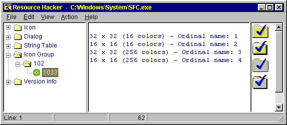
A specific resource item is defined by its resource type, name and language ID.
Resources are grouped into K“resource types”. There are a number of pre-defined resource types (icons, cursors, bitmaps, dialogs, menus, rcdata etc.) but the programmer may also have defined other resource types.
Resource items are stored within their respective resource types and have a K“resource name” which is unique within that type. This ‘name’ can usually be either an integer value or an alphanumeric string; however, some resource types (e.g. string-tables) allow only integer values for names.
Each named resource can have more than one language-specific item to enable programs to handle multiple languages. Under each resource name in the resource tree there will appear at least one K“resource language” item. The language ID is a word integer value made up of a primary language (the six lower bits) and its sublanguage (the ten higher bits) which is defined by Windows (if the resource item is “language neutral” then this value will be zero).
KCursors and Icons:
Cursors and icons require special mention here as their resource information is split between two resource types:
“Cursor” & “Cursor Group”; and “Icon” & “Icon Group” respectively.
Each icon (or cursor) can have several images (i.e. a group of related icon images): 16 pixel x 16 pixel (16 colors), 32 pixel x 32 pixel (16 colors), 16 pixel x 16 pixel (256 colors), etc. The image that the operating system actually uses depends on the needed size (small or large icon) and the display’s color resolution. The “Icon Group” resource type contains an icon’s ‘header info’ —the names of the images it ‘owns’— together with the image’s size and color resolution. However, the actual images are stored in the “Icon” resource type.
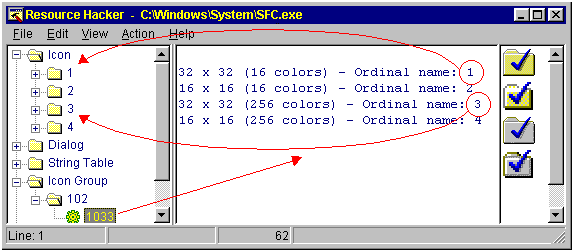
e.g.: Icon = LOADICON(hInstance, ‘#102’)
This Windows API function first finds the header info for the “Icon Group” ID 102. Then, if more than one icon image is listed in this header info, the operating system chooses the “best” available image from the list.
This is important to understand when replacing a file’s icon (or cursor): the “whole” icon is replaced, the icon header info (in “Icon Group”) and all owned images (in “Icon”).
However, both single image icons, and icon groups can be extracted from a resource to an icon (*.ico) file: if an “Icon” item is highlighted in the resource tree then that image will be saved as a single image icon. However, if an “Icon Group” item is highlighted then all the images ‘owned’ by the selected icon group will be saved to the specified icon file.
KViewing Resources:
Simply select the resource from the resource tree (once a file has been opened). The resource will be displayed either as:
A graphic image -
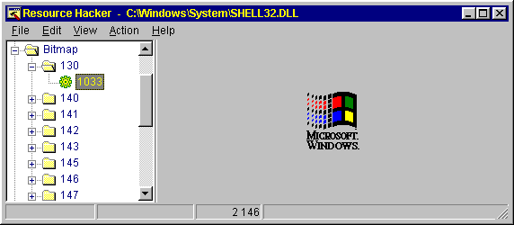
Decompiled text -
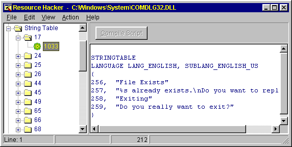
A combination of a compiled image and decompiled text -
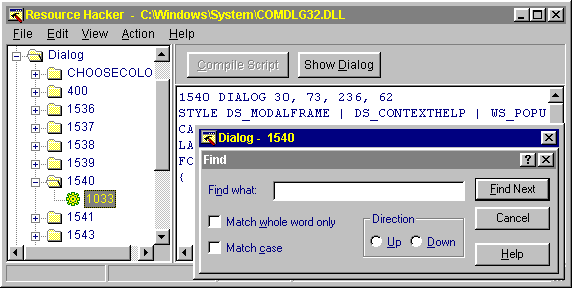
Raw Data (hexadecimal on the left and ASCII text on the right) -
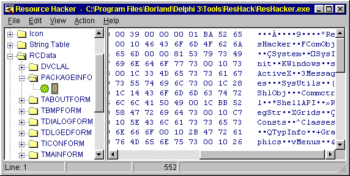
Note: Programs compiled using the Borland VCL (e.g. most Delphi programs) do not commonly have dialog, menu or accelerator resources, but store this information in “RCData” instead.
KExtracting (Saving) Resources:
Icons, bitmaps, cursors, menus, dialogs, string tables, message tables, accelerators, Borland forms and version info resources can all be saved to file in their decompiled formats, whether as image files or as resource text files (*.rc). Having first selected the specific resource using the treeview control, select Action|Save [Resource Name] ... from the menu. To save a resource to a compiled resource file (*.res): select Action|Save Resource as a *.res file ... from the menu. To save a single resource as a raw binary file: select Action|Save Resource as a Binary file ... from the menu.
To save to file all resources of a specific resource type, first select the specific resource type using the treeview control. Then select Action|Save [Resource Type] Resources ... from the menu.
To save all resources to a file, select Action|Save all Resources... from the menu. Resources which cannot be decompiled into resource script (e.g.: images) are converted back into their original file formats and stored in the same folder as the resource script. (e.g. Cursor_1.cur, Cursor_2.cur, Bitmap_1.bmp, Icon_1.ico). Resources with unrecognized data formats are stored as *.bin files.
KModifying (Replacing) Resources:
Firstly, a warning or two:
If you intend to modify resources, make sure the original file is backed up first. Then, thoroughly test the 'new' file. To facilitate this, whenever a file is modified and saved, Resource Hacker™ will now automatically make a backup copy of the original file (e.g.: Explorer_original.exe) before saving the modified file.
With dialog and menu resources, deleting controls or changing control IDs is likely to cause the modified program to crash. However, changing a control's caption is usually safe, as is modifying its position, size and visibility. Adding a new control is unlikely to cause problems. Renaming resources is also likely to cause programs to crash.
Using the internal editor to modify text-based resources:
Dialog, menu, string-table, message-table, accelerators and Borland form resources can all be easily edited and recompiled using the internal resource editor. KThe internal compiler supports — \t , \n , \\ , \" , and \000 .. \377 — in resource strings to represent tab, newline, backslash, doublequote and octal bytes respectively. The — #define — statement is also supported. Simply edit the displayed resource script, and click the [Compile] button. The modified compiled resource will then be displayed. Any errors encountered during compilation will be reported with an error message.
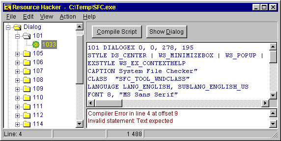
Dialog controls can be visually resized and/or moved, with any changes being reflected in the resource script automatically. Conversion between screen pixels and dialog units is done automatically.
Select a control by clicking it in the displayed dialog. Alternatively, the Tab or Shift-Tab keys can be used to select next or prior controls respectively. The selected control will show resizing handles.
To move a control without resizing, once the control has been selected, click and drag it to its new location. The arrow keys can also be used to move a control once it has been selected.
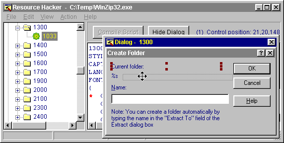
A control can be resized by clicking and dragging one of its resizing handles. Alternatively, the arrow keys combined with the shift key can be used to resize a control.
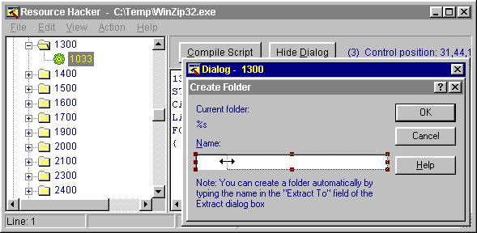
The Escape key hides a visible dialog.
If a control cannot be clicked, then it has probably been “covered” by another control. Controls which are declared in the resource script below other controls are nevertheless “drawn” on top of preceding controls (in the resource script declaration sequence) if their positions overlap. To move or resize a “covered” control, either move or shrink the overlapping control or change the order the controls have been declared in the resource script. The Control Editor (see below) can also be used to easily modify the creation (and tab) order of the dialog’s controls.
KThe Dialog Editor can be opened from the popup menu which is displayed by right-clicking the preview dialog. The Control Editor can be opened from the same menu once a control has been selected.
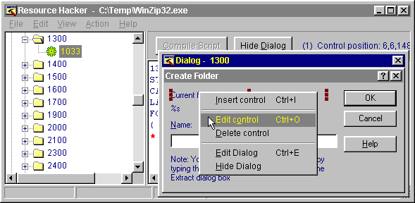
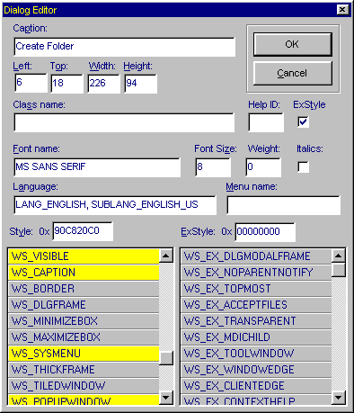
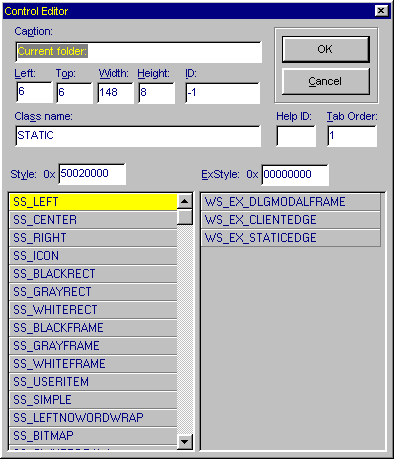
New controls can also be added. The Control Editor supports virtually all of Microsoft’s currently defined standard and common control classes. User defined custom classes can also be added to the predefined list of classes by carefully editing the “Dialog.def” text file which can be found in the same folder as Resource Hacker™. Toolbar buttons enable selection of the most commonly used controls. The top-left corner of the control to be added will default to the point at which the dialog was originally right-clicked.
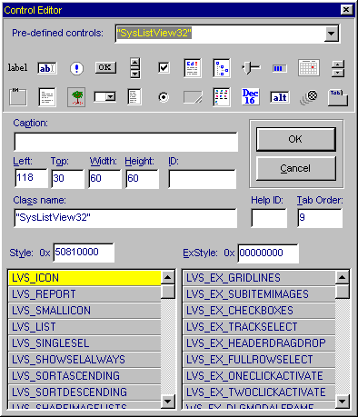
Replacing Images:
If the resource item to be replaced is an icon, cursor, or bitmap, the source can be an *.ico, *.cur or *.bmp file respectively or selected from a *.res or another *.exe file. Select Action|Replace Icon (Cursor or Bitmap) from the menu.
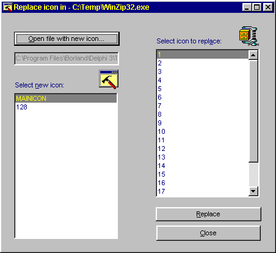
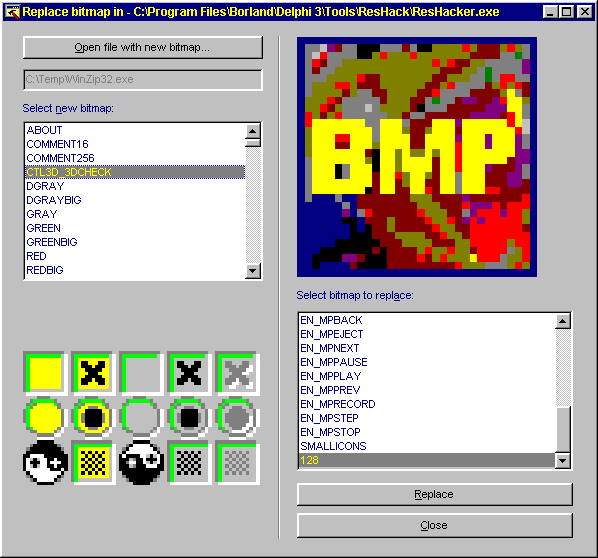
Replacing resources other than images:
Resources other than images can also be replaced. Replacement resources must not only be of the same resource type but must also have the same resource name. Select Action|Replace other Resource ... from the menu.
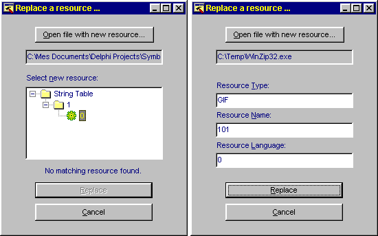
Note: As *.res files may contain numerous resources, a treeview is displayed in the Add / Replace Resource Dialog so a specific resource in the *.res file can be selected. When adding or replacing resources from other file types, the resource type and name must be entered manually. If the resource language is left blank, then language neutral (0) is presumed.
Updating all resources with resources in a *.res file:
Resources can also be replaced with all the matching resources located in an external *.res file. A resource in the *res file will only replace a resource in the target (exe, dll) file if it has the same resource type, name and language ID. Select Action|Update all Resources ... from the menu.
Once all modifications have been made, the modified file image can be saved to file by selecting File|Save As from the menu.
KAdding Resources:
Resources can be added to an executable as long as no resource of the same type, name and language ID already exists. Select Action|Add a New Resource ... from the menu.
Adding resources can enable a program to support multiple languages.
(Note: Windows95 and Windows98 do not use multiple language resources, this is a WindowsNT feature. I presume Windows98 just picks the first resource if there is more than one language resource available.)
As an example:
* Task: Add a FRENCH translation of Dialog 30757 to Samples.dll.
* Solution:
1. Open Samples.dll and select Dialog 30757.
The dialog language is currently LANG_NEUTRAL, SUBLANG_NEUTRAL.
N.B.: If the translation was to any non-Western language (Russian, Chinese etc) the internal editor's font script would need to be changed at this point to support that language.
2. In the dialog script, change the language statement to LANG_FRENCH, SUBLANG_FRENCH, and translate the dialog caption and each control caption into French. Click [Compile].
3. Save the resource to a *.res file (e.g. “30757_french.res”).
4. Close Samples.dll without saving and then reopen it.
Dialog 30757 should still be LANG_NEUTRAL, SUBLANG_NEUTRAL.
5. Select Action | Add New Resource from the menu and open the file “30757_french.res” which has just been created.
6. Select Dialog 30757 which now has the languageID 1036 (French) and click [Add Resource].
7. Finally, save Samples.dll. Voila!
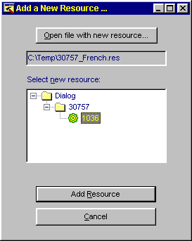
Tip: Changing Resource Hacker™’s editor font script is essential when viewing or modifying resources compiled in non-Western languages (Select View|Editor Font ... from the menu and select the script from the Script list box).
Adding icons or bitmaps (company logos, etc.) enables them to be displayed in the program’s dialogs.
As an example:
* Task: Add an icon to Windows’ FileOpen dialog.
* Solution:
1. Open “C:\Windows\System\ComDlg32.dll”.
(The FileOpen dialog is located in this DLL and is ‘named’ 1547.)
2. It’s the ‘Icon Group’ type we’re interested in here, so make sure the ‘Icon Group’ name for the icon to be added has not already been used. In ComDlg32.dll, ‘names’ in the Icon Group range from 528 to 539, so any other integer value or alphanumeric string can be used. (Don’t worry about the resource names used in the ‘Icon’ type as Resource Hacker™ will make sure that the icon images associated with the new icon will also be given unique names.)
3. Add the icon to the dll by Selecting Action|Add New Resource from the menu. In the Add Resource dialog, open the file which contains the new icon and give the icon a unique name (e.g. NEWICON).
4. In the resource tree select the Dialog named 1547. Assuming the new icon is named ‘NEWICON’, add the following control at the end of the list of controls in the dialog’s script:
CONTROL "NEWICON",-1,STATIC, SS_ICON|WS_CHILD|WS_VISIBLE,13,142,21,20
5. Compile the dialog script and save the file as ComDlgXX.dll.
6. The ComDlg32.dll cannot be replaced while Windows is running; it can only be replaced in DOS mode. You can do this manually like so:
7. Shut down Windows and restart in MS-DOS mode.
8. Use the DOS commands to rename the old ComDlg32.dll something like ComDlg98.dll and then rename the newly created file ComDlg32.dll.
9. Restart Windows. That’s it. (Of course, adding a bitmap instead of an icon is less confusing because there is no ‘Bitmap Group’ for bitmaps.)
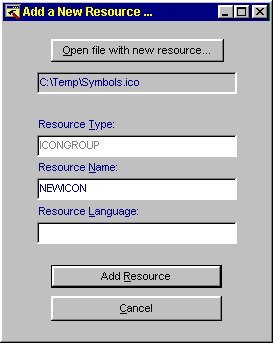
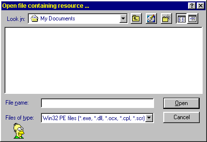
Alternately, you can let Windows 9x do the file replacement for you. Here's how:
7. Create a C:\Windows\WinInit.ini file that reads:
[rename]
C:\Windows\System\ComDlg98.dll=C:\Windows\System\ComDlg32.dll
C:\Windows\System\ComDlg32.dll=C:\Windows\System\ComDlgXX.dll
Windows will automatically process WinInit.ini at the next boot time and then rename it WinInit.bak. The format for each instruction line is NEWNAME.EXT=OLDNAME.EXT. You can delete files at boot time simply by replacing "NEWNAME.EXT" by "NUL". The file names must be short file names.
Tip: Create in your Windows\SendTo folder a shortcut named "Startup Deletion Queue" that points to C:\Windows\Command\QueueDel.bat, which in turn reads:
if exist C:\Windows\WinInit.ini goto appendline
echo [rename] > C:\Windows\WinInit.ini
:appendline
echo NUL=%1 >> C:\Windows\WinInit.ini
Set the shortcut to Run Minimized, with Close On Exit checked. Pick an appropriate recycle bin icon for it, such as one of those found in C:\Windows\System\Shell32.dll.
Created with the Personal Edition of HelpNDoc: Free CHM Help documentation generator